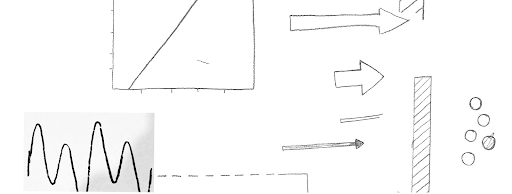

ERIC
SMITH
PORTFOLIO
Nonfiction Book
Graphic Illustrations
- Timeline: Two weeks
- Team: Eric Smith
- Tools: Figma
Overview:
The commission was relatively simple: take a handful of graphs and convert them into one unified graphic style for print in a nonfiction book. Specifically a “simple, hand-drawn, clean and consistent” was requested by the client.
Graphic Design:
In order to achieve the desired “hand-drawn” I did exactly that: I drew it with my hands. With a mechanical pencil and a ruler I methodically drew out lines, arrows, bars and dots that would become pieces to reassemble into these graphs. When scanned at a high resolution, these pencil lines have a naturally occurring give and take to the edges. Using the pen tool in Figma, I traced around my pencil lines to recreate the natural feeling of hand-drawn lines in a more precise and manipulable digital environment.
UX Process:
An illustrated graph requires a comparatively UX-heavy approach to graphic design, which is part of what appealed to me about this project. Taking several different types of graphs at various levels of complexity and distilling them into one unified and readable style was the name of the game here. The first step was to find the best way to represent all these different ideas using only line work and only in black and white.
Conclusion:
A Fire to Be Kindled is available now at a book seller near you, and features my versions of the graphs. My client for this project, its author Kelly Smith, myself, and his publisher were all very satisfied with how they turned out.


Home>>